flowchart LR A[Customer ID] --> B[Find First Invoice Date] B --> C[Assign Cohort Month] C --> D[Calculate Months Since First Purchase] D --> E[Measure Retention or Sales] E --> F[Build Cohort Heatmap]
Tableau Session 03: Advanced Analytics
ADVANCED CALCULATIONS
LOD EXPRESSIONS
DATE FUNCTIONS
COHORT ANALYSIS
SPATIAL ANALYTICS
DATA MODELING
TABLEAU PREP
Learning Goals
- Use advanced Tableau functions for analytical modeling
- Build complex calculated fields
- Apply table calculations (running totals, percent of total, ranking)
- Work with advanced date logic and date parameters
- Understand and apply Level of Detail (LOD) expressions
- Build cohort and retention analysis views
- Perform spatial analysis and spatial joins
- Connect and visualize geographic data
- Understand Tableau data modeling (relationships vs joins)
- Prepare and clean data using Tableau Prep
- Build advanced KPI dashboards and analytical heatmaps
- Work with telecom, finance, and marketing datasets
Introduction
In previous sessions, we focused on:
- Building visualizations
- Using filters and parameters
- Creating basic calculated fields
Now we move from building charts to building analytical logic inside Tableau.
Table Calculations
When you add a table calculation, you must account for all dimensions in the level of detail.
Each dimension must be used either for:
- Partitioning (scoping), or
- Addressing (direction)
Partitioning Fields (Scope)
Partitioning fields define how the data is grouped before the table calculation is applied.
- They break the view into multiple sub-tables (partitions)
- The table calculation is performed separately within each partition
- They determine the scope of the calculation
In other words, partitioning controls where the calculation resets.
Addressing Fields (Direction)
Addressing fields define how the calculation moves within each partition.
- They determine the direction of the calculation
- They control the sequence of marks used in calculations such as:
- Running totals
- Differences between values
- Percent change
- Running totals
In short, addressing controls how the calculation progresses.
How Partitioning and Addressing Work Together
- Partitioning fields split the view into multiple sub-views (sub-tables).
- The table calculation is applied independently inside each partition.
- The addressing fields determine the direction in which the calculation moves through the marks within each partition.
For example:
- In a running total, addressing determines the order of accumulation.
- In a difference calculation, addressing determines which value is compared to which.
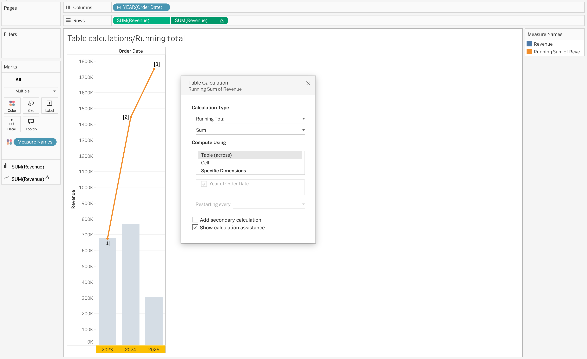
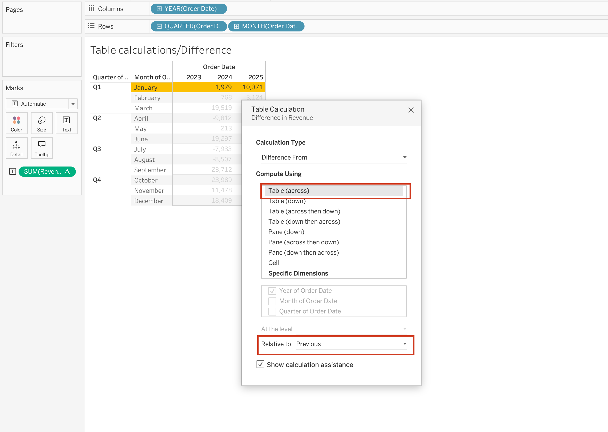
Specific Dimensions vs Compute Using
When using Compute Using options, Tableau automatically assigns some dimensions as:
- Partitioning fields
- Addressing fields
However, when selecting Specific Dimensions, you must manually decide:
- Which dimensions define the partition (scope)
- Which dimensions define the addressing (direction)
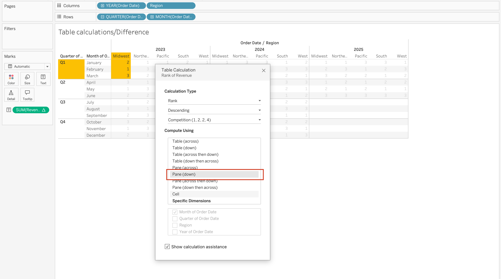
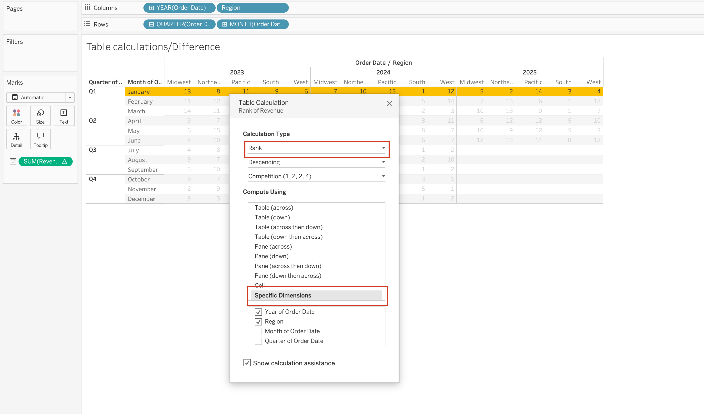
In the Specific Dimensions section of the Table Calculation dialog:
- The order of fields determines the direction of movement through the marks:
Pane (Down) - Checked dimensions define how Tableau computes the table calculation across the view:
Year of Order Date,Region.
Tip
A helpful mental model:
- Partitioning = Where does the calculation reset?
- Addressing = In what order does it move?
Understanding this distinction is essential for correctly configuring running totals, rankings, percent differences, and other table calculations.
More Examples of Table Calculations
Using Table Calculations on Marks card fields
When you place a table calculation on the Marks card Color, the table will be colored based on the Measure you have on the view SUM(Revenue) and the table calculation you have on the Color SUM(Total Quantity) will color the Revenue values based on the quantity values.
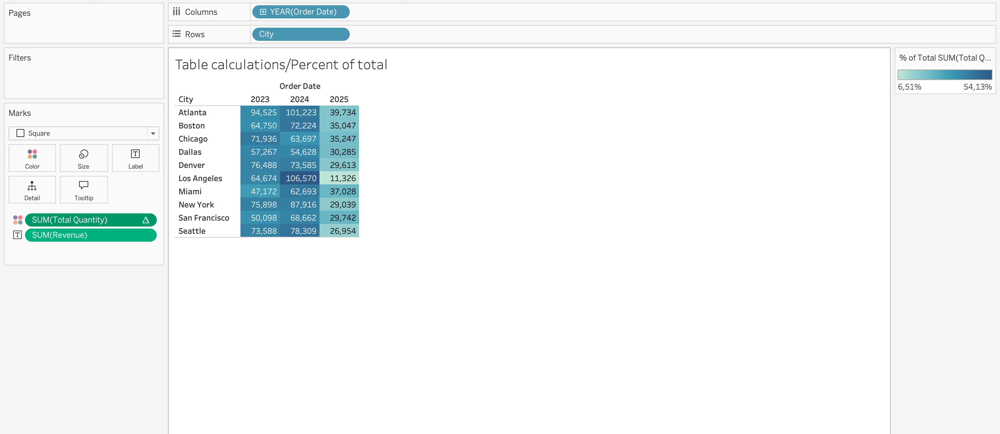
Year over year growth is another common use case for table calculations on the Marks card. For example, if you have SUM(Revenue) on the view and you add a table calculation that calculates the year-over-year growth of Revenue by Region.
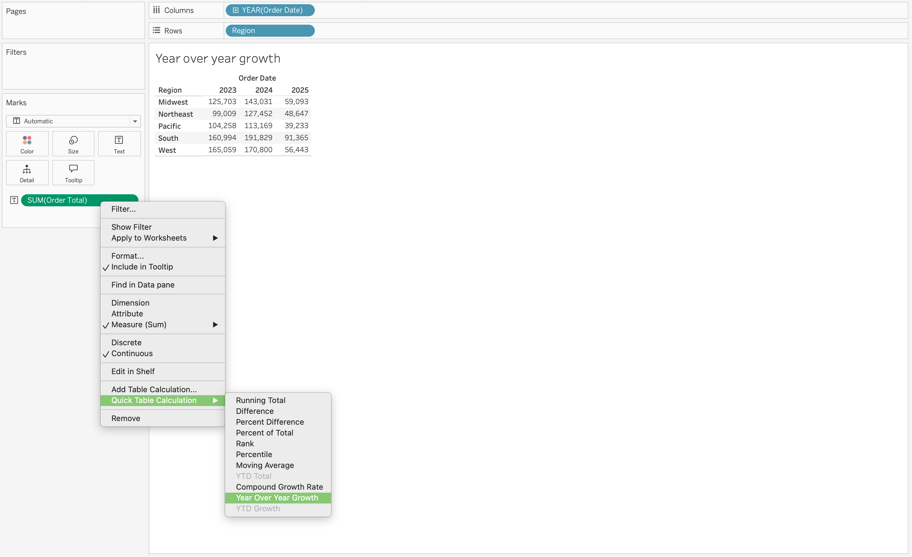
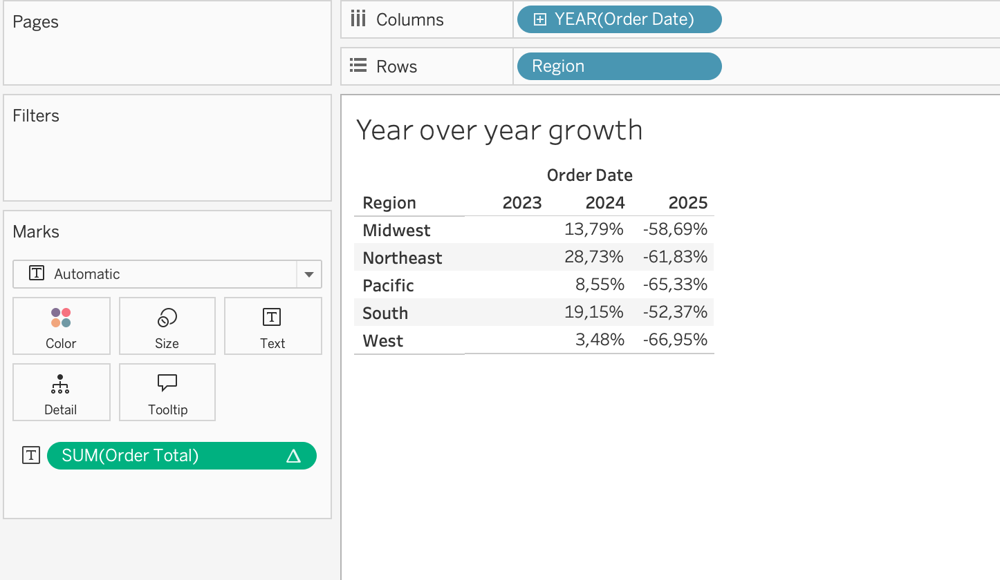
Using Table Calculations on Rows or Columns fields
When you place a table calculation on the Rows or Columns shelf, the table will be calculated based on the Measure you have on the view SUM(Revenue) and the table calculation you have on the Rows or Columns Moving Average will add a moving average line to the view based on the Revenue values.
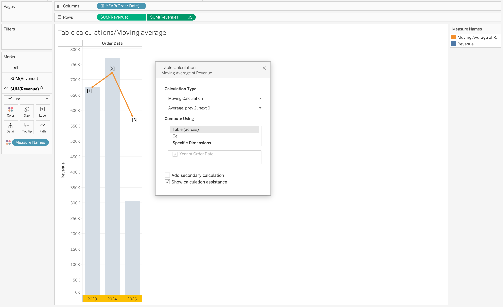
When you place a table calculation on the Filters shelf, the table will be filtered based on the Measure you have on the view SUM(Revenue) and the table calculation you have on the Filters Rank will filter the view to show only the top N values based on the Revenue values.
Influence of Filters, Parameters, and Context Filters on Calculated Fields
Understanding how filters and parameters interact with calculated fields is critical for building accurate dashboards in Tableau.
Date Functions
Dates are a common element in most data sources.
If a field contains recognizable dates, Tableau automatically assigns it a Date or Date & Time data type and enables special functionality.
When date fields are used in visualizations, Tableau provides:
- Automatic date hierarchy (Year → Quarter → Month → Day)
- Date-specific filtering options
- Continuous and discrete date options
- Specialized date formatting
Date functions are used to manipulate date values, not just change how they are displayed.
If you only want to change appearance (for example, show 01/09/24 instead of September 01, 2024), use formatting — not a calculation.


Date Parts
Many date functions use a date_part argument.
Common date parts include:

Core Date Functions
DATE
Date converts a string to a date. It can also be used to truncate a datetime to a date.
DATE(string) DATEADD
DateAdd adds a specified time interval to a date.
DATEADD(date_part, interval, date)Example: Calculate Expected Delivery Date
Objective: Add 5 days to Order Date to estimate delivery.
DATEADD('day', 5, [Order Date])
Example: Rolling 12-Months Window
Objective: Filter records from the last 12 months dynamically.
[Order Date] >= DATEADD('month', -12, TODAY())
DATEDIFF
Datediff calculates the difference between two dates in specified date parts.
DATEDIFF(date_part, start_date, end_date, [start_of_week])Optional parameter:
[start_of_week] defines week beginning (Sunday, Monday, etc.)
Example: Time to First Order
Objective: Measure when customers place their first order after signing up or before it.
First order date per customer:
{ FIXED [Customer ID] : MIN([Order Date]) }Months between signup and first order:
DATEDIFF('month', [Signup Date], [First Order Date])
DATENAME
DateName returns the name of a date part as a string. For example, if you want to extract the month from a date, DATENAME will return the name of the month (e.g., “January”, “February”, etc.).
DATENAME(date_part, date)DATEPART
Datepart returns the integer value of a date part. For example, if you want to extract the month from a date, DATEPART will return a number between 1 and 12, while DATENAME would return the name of the month (e.g., “January”, “February”, etc.).
DATEPART(date_part, date)
Note
DATEPART is typically faster than DATENAME.
Example: Extract Year for Grouping
Objective: Build yearly trend charts, create custom year filters
DATEPART('year', [Order Date])When used in the view, make the calcuated field discrete dimension to group by year.

DATEPARSE
Converts a specifically formatted string into a date.
DATEPARSE(format, string)Use case: When DATE cannot recognize custom format
DATETRUNC
Truncates a date to a specified level.
DATETRUNC(date_part, date, [start_of_week])
Important
DATETRUNC changes the actual value, not just the display.
Example: Order Date = 28-12-2023 15:45:30
DATETRUNC('month', [Order Date])
→ 01-12-2023 00:00:00
DATETRUNC('year', [Order Date]) → 01-01-2023 00:00:00
Notice that:
- The date is not just displayed differently
- The underlying value is changed
If you only want to hide the time portion (for example, remove hours/minutes visually), you should format the field instead of using DATETRUNC.
Formatting affects appearance.
DATETRUNC affects the data itself.
What Is [start_of_week]?
This optional parameter defines which day is considered the first day of the week. The further calculations will be based on this definition of a week.
Example: Calculate week based on ISO standard (week starts on Monday) and week starting on Sunday.
DATETRUNC('week', [Order Date], 'sunday')
The first calculated field [Order Week] will calculated week based on ISO standard, which will group orders by week starting on Monday, while the second one [Order Week From Sunday] will group orders by week starting on Sunday.
DAY / MONTH / QUARTER / YEAR / WEEK
These functions extract specific parts of a date as integers.
DAY(Order Date) 
TODAY
Returns the current system date (without time).
TODAY()NOW
Returns the current system date and time.
NOW()MAKEDATE
Constructs a date from numeric year, month, and day.
MAKEDATE(year, month, day)Example: Create Date for 01.01.2026 as [Reporting Date]
MAKEDATE(2026, 1, 1)
MAKEDATETIME
Combines date and time into datetime.
MAKEDATETIME(date, time)MAKETIME
Constructs time using hour, minute, second.
MAKETIME(hour, minute, second)
Note
Output is datetime (Tableau does not support standalone time type).
ISDATE
Checks whether a string is a valid date.
ISDATE(string)Use case is data validation and cleaning messy datasets.
MAX and MIN (with Dates)
Most recent date:
MAX(date)Earliest date:
MIN(date) The Date Literal (#)
Date values enclosed in # symbols are interpreted as date literals.
Example: #3/25/2025#
This is a special syntax that allows you to directly input date values in calculations without using functions like DATE().
When you use #3/25/2025#, Tableau recognizes it as a date literal and treats it as a date value in calculations.
Without #, Tableau may interpret the value as:
- String
- Number
- Invalid format

Date Parameters
Date parameters are user-defined controls that allow viewers to dynamically select dates and influence calculations, filters, and visual behavior within a Tableau workbook.
Unlike quick filters, which are directly tied to a specific field in a specific data source, parameters are independent objects. This independence makes them extremely powerful in advanced analytical scenarios, especially when working with multiple data sources, custom logic, or dynamic aggregations.
Conceptual Understanding
A parameter in Tableau is a single value that can be referenced inside one or more calculated fields. When that parameter is of data type Date (or Date & Time), it becomes a flexible time control that can drive time-based logic across worksheets.
Date parameters do not filter data automatically. Instead, they act as inputs to calculations. This means you must explicitly reference them inside a calculated field to control behavior.
For example:
- They can define the start and end of a reporting period.
- They can determine which dates should be included in a KPI.
- They can dynamically adjust the level of time aggregation on an axis.
- They can drive rolling windows or forecast periods.
Because parameters are global to the workbook, one Date parameter can influence multiple worksheets simultaneously.
How Date Parameters Differ from Filters
A standard date filter:
- Is tied to a single data source.
- Automatically filters the data.
- Cannot easily control multiple data sources.
A Date parameter:
- Is independent of any single data source.
- Must be referenced in a calculation.
- Can control multiple data sources.
- Can drive complex logic beyond simple filtering.
This distinction is important. Filters limit data directly. Parameters influence calculations that then determine what to display.
Common Use Cases
Custom N Date Part Selection
This type of date parameter is flexible because it allows users to simultaneously choose:
- The date part (day, week, month, quarter, year)
- The date range (N periods)
Instead of creating separate filters for:
- Last 30 Days
- Last 3 Months
- Last 1 Year
the user can dynamically control both:
- The unit of time
- The number of periods
Step 1
Create a parameter named: Date Part
Configuration:
- Data Type → String
- Allowable Values → List
- Add values:
- Day
- Month
- Year
Right-click the parameter → Select Show Parameter
This parameter controls the time unit.

Step 2
Create another parameter named: N Value
Configuration:
- Data Type → Integer
- Allowable Values → Range
- Minimum → 1
- Maximum → 30
- Step Size → 1
Right-click → Select Show Parameter
This parameter controls how many periods to include.

Step 3
Create an Anchor Date (Recommended)
We will anchor the calculation to the latest available Order Date in the dataset.
Create a calculated field: Latest Order Date
{ FIXED : MAX([Order Date]) }We are doing this way beacause
TODAY()→ depends on the system date
NOW()→ depends on server timezone
{ FIXED : MAX([Order Date]) }→ finds the most recent order in the dataset, removes any dimension filtering from the view
Step 4
Create a calculated field named: p. Date Part
IF [Date Part] = 'day' then ([Order Date]) > DATEADD('day', -[N Values], [Latest Order Date])
ELSEIF [Date Part] = 'month' THEN ([Order Date]) > DATEADD('month', -[N Values], [Latest Order Date])
ELSE ([Order Date]) > DATEADD('year', -[N Values], [Latest Order Date])
ENDStep 5
- Drag p. Date Part to filters shelf
- Select True
Step 6
- Drag to the column shelf a dimension: Region
- Drag
COUNT([Order ID])to the Rows shelf
Step 7
Change the parameter values to observe the changes in dimension aggregation.

Dynamic KPI Calculations
Date parameters can define a reporting window inside calculations.
For example, instead of filtering out data outside the selected range, you can write a calculation that returns Sales only if the Order Date falls between the selected parameters.
This allows you to:
- Compare full dataset vs selected period.
- Build dynamic period-to-period comparisons.
- Create flexible dashboard controls.
This will be further explored in the KPI section.
Dynamic Time Aggregation
One advanced use of Date Parameters is dynamically controlling the level of date aggregation.
For example, the date axis can automatically aggregate by:
- Day
- Week
- Month
- Quarter
- Year
depending on the selected parameter value.
This is achieved using DATETRUNC, which adjusts the aggregation level dynamically.
By using this approach, the visualization adapts automatically to the selected time granularity, improving readability and analytical clarity.
Step 1
Create a parameter named Date Granularity.
Parameter configuration:
- Data Type → String
- Allowable values → List
- Values → day, week, month, quarter, year
Right-click the parameter and select Show Parameter.

Step 2
Create a calculated field named p. Date Granularity with the following calculation:
DATE(
CASE [Date Granularity]
WHEN 'day' THEN [Order Date]
WHEN 'week' THEN DATETRUNC('week', [Order Date])
WHEN 'month' THEN DATETRUNC('month', [Order Date])
WHEN 'quarter' THEN DATETRUNC('quarter', [Order Date])
ELSE DATETRUNC('year', [Order Date])
END
)Step 3
- Drag p. Date Granularity to the Columns shelf
- Right-click the pill
- Select Exact Date
- Change it to Discrete
- Drag
COUNT([Order ID])to the Rows shelf
Selecting Exact Date ensures Tableau uses the full date value returned by the calculation.
Without this, Tableau may automatically aggregate the date into a higher-level hierarchy (for example, Year or Month), which would override the dynamic logic we created.
Changing the field to Discrete creates distinct headers for each date value instead of a continuous timeline.
This is important because:
- Each truncated date (day/week/month/quarter/year) should appear as a separate category.
- It prevents Tableau from interpolating values across a continuous axis.
- It ensures the view respects the exact granularity selected in the parameter.
Step 4
Change the parameter value to observe how the granularity changes dynamically.
When you switch between:
- day
- week
- month
- quarter
- year
the axis updates automatically to reflect the selected time level.

Multi-Source Dashboards
When working with multiple data sources, each source typically has its own date field.
If you use quick filters, you would need:
- One date filter per data source
This leads to duplicated controls on the dashboard and a less clean user experience.
Using Date parameters instead allows you to create:
- A single Date Part parameter
- A single Start Date parameter
- A single End Date parameter
Each data source then contains its own calculated filter that references the same parameters.
As a result:
- All worksheets respond to the same date controls
- The dashboard remains clean and professional
- The user interacts with one unified time control
This creates a seamless and consistent experience across multi-source dashboards.
Spatial Analytics (spatial relationships, spatial joins, spatial functions)
Spatial analytics involves analyzing data that has a geographic or spatial component.
It allows you to answer questions related to location, distance, and spatial relationships between geographic entities.
Why Put The Data on a Map?
Maps answer spatial questions that cannot be easily answered with traditional charts or tables.
They help us understand:
- Where is something happening?
- What overlaps with what?
- How far apart are locations?
- How do locations interact?
- How does something move over time?
- How metrics change over time on then specific territories in the map?
Map is used when geography is essential to understanding the pattern.
Gographic Data Format
Geographic data can come in various formats, including:
- Spatial files (Shapefile, GeoJSON, KML)
- Excel files
- CSV files
- Databases
Spatial Files
Spatial files are specifically designed to store geographic information. They contain both: - Geometry (the shape and location of geographic features) - Attributes (descriptive information about those features)
Geometry can be in the form of points, lines, or polygons, and it allows Tableau to render these features on a map accurately.
When connected, Tableau recognizes the geometry field and treats it as spatial data, enabling mapping and spatial analysis capabilities.
Location-Based Data
Location-based data contains fields that represent geographic locations, such as:
- Latitude / Longitude
- Country
- State
- City
- Postal Code
Tableau can geocode these fields to plot them on a map, but they do not contain the actual geometry of shapes or boundaries. They are typically used for point-based mapping (e.g., plotting store locations, customer addresses).
Datasets for Spatial Analytics Example
In this session, we will use Citi Bike System Data to explore spatial analytics and mobility patterns. Additionally, we will use NY_Community_District_Tabulation_Area.geojson file to analyze the trips by district and build maps showing the distribution of the trips across New York city.
Citi Bike Trip History (NYC) is a public dataset of bike share trips in New York City, including start/end locations (lat/long), timestamps, and user types.
The dataset helps answer questions such as:
- Where do Citi Bike users ride?
- When are rides most frequent?
- How far do riders travel?
- Which stations are the most popular?
- When are rides highest?
Data is provided in multiple CSV files, each containing a month’s worth of trip data. Each file has the same structure, allowing us to combine them for analysis.
Data fields include:
Core Trip Information
- Ride ID
- Rideable Type
- Started At (timestamp)
- Ended At (timestamp)
- Member or Casual Ride
Start Station Information
- Start Station Name
- Start Station ID
- Start Latitude
- Start Longitude
End Station Information
Community_District_Tabulation_Area (NYC) is a GeoJSON file containing the boundaries of community districts in New York City. Each district is represented as a polygon geometry, allowing us to analyze spatial relationships between bike trips and district boundaries.
This is a common format for storing geographic shapes (boundaries, districts, zones, etc.).
In this file, each record represents a community district with:
GeoJSON Structure
Top-Level Object
type
- Description: Identifies the GeoJSON container type
- Expected value:
FeatureCollection
- Meaning: This file contains multiple geographic objects (features)
features
- Description: A list (array) of individual geographic records
- Each item: One
Feature(one district/zone/polygon, etc.)
Feature-Level Fields (Each Record)
Each item in features usually contains:
type
- Description: Identifies the object type
- Expected value:
Feature
- Meaning: A single geographic object (one row)
geometry
- Description: Stores the spatial shape itself (polygon, multipolygon, line, point)
geometry.type
- Description: The geometry shape type
- Your value:
MultiPolygon
- Meaning: One feature can contain multiple polygons (for example: islands, separated areas, holes)
geometry.coordinates
- Description: The actual coordinate arrays that define the shape
- Coordinate order:
[longitude, latitude]
- Example:
[-73.9240590965993, 40.71411156014706]
Spatial Relationships
Spatial relationships define how two spatial objects relate to each other.
Here are the main steps to make the relationship work between the spatial file and the tabular file and make the resulting visualisations work properly.
As the spatial file and the tabular file do not have any common fields, we will create dummy fields in both tables with the same value to make the relationship work.
How to Create a Spatial Relationship
Here are the steps to create a spatial relationship between the Citi Bike trip data and the NYC district polygons:
Step 1: Load The Data
- Open Tableau Public
- Click Text File
- Choose one of the files of the folder and click open and all the csv files will apper on the Tableu workspace
You land on the Data Source page.
Step 2: Union The Data
As the data in in multiple sheets the union should be done. Make sure that all the columns are identical in all files.
If they share a common columns, we can Union them.
- Drag one of the files to the workspace
- Right click then convert to union
- Add all the files left to the union


When combining multiple files or tables in Tableau, you can use either:
- Specific (Manual) Union
- Wildcard (Automatic) Union
They both stack data vertically (row-wise), but the way files are selected is different.
In case of Specific (Manual) Union you should manually select and add each table or file that should be combined.
You explicitly define:
- Which tables to include
- In what order they are stacked
This is useful when you have a small number of files or when files do not follow a consistent naming pattern.
Wildcard (Automatic) Union automatically unions multiple files based on a common naming pattern.
Instead of selecting each file, you define a pattern or the folder with the files:
- city_bike_trip
Tableau then automatically includes all matching files.
Step 3 Defining a Spatial Relationship
The next step is bringing shape file of New York city to the view. In order to do that
- Click to Add
- Choose Spatial file
- Add NY_Community_District_Tabulation_Area.geojson
- Bring the table to the view.
Tableau will automatically define that there is no relationship between the two tables. So will create dummy columns in each table to make relationship work.
- Click on Select a filed on the newly created city bike rides unioned table
- Choose Create relationship calculation
- When Relationship Calculations opens write
'New York'and Tableau will create a column with the string New York
- Do the same steps for NY_Community_District_Tabulation_Area.geojson

Now we have a working relationship between two tables.

Spatial Joins
Spatial joins combine spatial data based on their geographic relationship.
For example, you can join Citi Bike trip data (with lat/long) to NYC district polygons.
This allows you to analyze trips by district, even though the two datasets do not share a common key.
In Tableau spatial joins are performed at the physical layer, which means they are executed before any aggregations or calculations. This allows you to join data based on spatial relationships directly in the data source, enabling more efficient analysis and visualization of geographic data. The function for spatial join is Intersects which checks if the geometry of one dataset intersects with the geometry of another dataset.
In our example, as the Citi Bike trip data contains latitude and longitude points of trip start and end locations, and the NYC district data contains polygon geometries of districts, we can use an Intersects spatial join to determine which trips started or ended in which districts. We will choose Left Join to include all trips and only match those that intersect with the district polygons.
How to Create a Spatial Join
Here are the steps to create a spatial join between the Citi Bike trip data and the NYC district polygons:
Step 1
Go to the Data Source page and drag the city bike trip data to the workspace.
Step 2
Make the union of the files as explained in relation to spatial relationships section. This will create a single table with all the trip data combined, which we can then join to the spatial file.
Step 3
Right click on the unioned table and open the physical layer. Click on Add and choose Spatial file and add the spatial file of New York city.
Step 4
Drag the new table to the workspace and choose Left Join. In the join configuration, select the spatial relationship as Intersects between the geometry fields.
Step 5
As we don’t have spatial objects in the city bike trip data, we will use the latitude and longitude fields to create spatial points using MAKEPOINT function and then use these points to perform the spatial join with the district polygons. To create spatial points, we will create a calculated field in the city bike trip data with the following formula: MAKEPOINT([Start Lat], [Start Lng]).
Now the same should be done for the end latitude and longitude to create another spatial point for the end location of the trip: MAKEPOINT([End Lat], [End Lng]).
Now we can use these spatial points to perform the spatial join with the district polygons using the INTERSECTS function. The join condition will be: INTERSECTS([District Geometry], [Starting Point]) for the start location and INTERSECTS([District Geometry], [Ending Point]) for the end location.

Troubleshooting Spatial Joins
When working with spatial joins in Tableau, you may encounter errors related to geometry compatibility. One common error is:
SQL Server Error: Geometry is incompatible with geography
Warning
Error Message: Geometry is incompatible with geography
When working with spatial data from SQL Server, this error usually appears when Tableau cannot interpret the spatial field correctly.
This is because SQL Server supports two spatial data types: geometry and geography, but Tableau only supports the geography data type for spatial analysis.
- If your spatial column is stored as
geometry, Tableau will not be able to process it, resulting in the error message above. - Additionally, if the spatial data uses an unsupported Spatial Reference System Identifier (SRID), Tableau will also fail to process it.
Tip
Tableau supports only the following EPSG codes from SQL Server:
- EPSG:4326 → WGS84
- EPSG:4269 → NAD83
- EPSG:4258 → ETRS89
If your spatial data uses projected coordinates (e.g., UTM) instead of geographic coordinates (latitude/longitude), Tableau will also have trouble interpreting it, leading to errors in spatial joins and map rendering.
How to Fix: In SQL Server, you can convert your spatial data to the geography type and ensure it uses a supported SRID (preferably 4326 for latitude/longitude).
Important
To ensure compatibility with Tableau:
- Convert
geometrytogeographyin SQL Server
- Set SRID to 4326 (recommended)
- Ensure coordinates are stored as longitude/latitude
- Validate spatial fields before connecting to Tableau
Spatial Functions
The table below summarizes the main spatial functions available in Tableau and their purpose.
| Function | Description | Typical Use Case |
|---|---|---|
| MAKEPOINT | Converts latitude and longitude columns into a spatial point. | Enabling spatial joins for coordinate-based datasets. |
| MAKELINE | Creates a line between two spatial points. | Origin–destination maps, mobility analysis, route visualization. |
| DISTANCE | Calculates the distance between two spatial points using specified units. | Nearest branch analysis, trip distance calculation, proximity analysis. |
| AREA | Returns the total surface area of a spatial polygon. | Territory size comparison, land coverage analysis. |
| LENGTH | Returns the total geodetic length of a linestring geometry. | Route length measurement, infrastructure analysis. |
| BUFFER | Creates a radius around a point, line, or polygon. | Service coverage zones, delivery radius modeling, proximity analysis. |
| INTERSECTS | Returns True or False indicating whether two geometries overlap. | Spatial joins, containment checks. |
| INTERSECTION | Returns the overlapping portion between two geometries. | Market overlap analysis, shared service area evaluation. |
| DIFFERENCE | Subtracts the overlapping area of one polygon from another. | Identifying uncovered or restricted areas. |
| SYMDIFFERENCE | Removes overlapping portions from both geometries and returns the remaining parts. | Territory comparison and competitive analysis. |
| OUTLINE | Converts polygon geometry into boundary lines. | Styling borders separately from polygon fill. |
| SHAPETYPE | Returns the geometry structure as text (Point, Polygon, etc.). | Debugging spatial data issues. |
| VALIDATE | Confirms whether spatial geometry is topologically correct. | Cleaning corrupted spatial files and preventing join errors. |
Mapping in Tableau (Map Layers, Map Styling & Configuration)
Mapping in Tableau is not only about placing marks on a geographic background.
It is a combination of:
- Data modeling
- Geocoding
- Aggregation logic
- Visual design
For a map to function correctly — analytically and visually — four foundational components must be configured properly:
- Data Type
- Data Role
- Geographic Role
- Geographic Hierarchy
If any of these elements are misconfigured, you may encounter:
- Unknown locations
- Incorrect aggregation
- Missing map rendering
- Broken drill-down behavior
- Spatial joins that do not work as expected
Geographical data configuration
Mapping accuracy begins with proper data configuration.
Data Type — Structural Foundation
The Data Type determines how Tableau stores and interprets the raw values.
This is the first layer of configuration.
Common Geographic Data Types
| Field Type | Required Data Type | Why |
|---|---|---|
| Latitude | Number (Decimal) | Must allow precise coordinate plotting |
| Longitude | Number (Decimal) | Must allow precise coordinate plotting |
| Country/State/City | String | Needed for geocoding |
| Postal Code | String | Preserves leading zeros |
| Geometry (GeoJSON/Shapefile) | Geometry | Native spatial object |
Incorrect data types can cause:
- Aggregation errors
- Loss of leading zeros (postal codes)
- Tableau not recognizing geographic information
- Failure in map rendering
Example:
If Postal Code is stored as Number: - 01234 becomes 1234 - Geocoding fails
Data Role — Analytical Behavior
The Data Role defines how Tableau treats the field in analysis.
Two primary roles:
- Dimension → categorical grouping
- Measure → numeric aggregation
Typical Configuration for Mapping
| Field | Data Role |
|---|---|
| Latitude | Measure |
| Longitude | Measure |
| Country | Dimension |
| State | Dimension |
| City | Dimension |
| Geometry | Measure |
If Latitude/Longitude are set as Dimensions: - Points may not render correctly
- Aggregation logic may break
Geographic Role — Geocoding Layer
The Geographic Role connects a field to Tableau’s geocoding engine.
This tells Tableau: > “This field represents a real-world geographic level.”
Common Geographic Roles
- Country/Region
- State/Province
- County
- City
- Postal Code
- Latitude
- Longitude
Once a geographic role is assigned:
- Tableau generates Latitude (generated)
- Tableau generates Longitude (generated)
These generated fields are automatically used for plotting.
How Tableau Geocoding Works
When using location names:
- Tableau references its internal geographic database
- Matches names to coordinates
- Places marks accordingly
If Tableau cannot match values, you will see:
- Unknown locations warning
To resolve:
- Click the warning icon
- Edit locations
- Specify country context
- Correct spelling inconsistencies
Geographic Hierarchy — Drill-Down Structure
A Hierarchy defines the logical order of geographic levels.
Example:
- Country
- State
- City
- Postal Code
- City
- State
Hierarchies allow:
- Drill-down navigation
- Controlled aggregation
- Structured geographic exploration
How to Create a Hierarchy
- Right-click a geographic field (e.g., Country)
- Select Hierarchy → Create Hierarchy
- Drag lower levels into it
Benefits
- Enables + / − drill controls
- Maintains geographic logic
- Improves dashboard interactivity
Mapping
Mapping with Raw Coordinates
If your dataset contains Latitude and Longitude:
Required Configuration
- Data Type → Number (Decimal)
- Data Role → Measure
- Geographic Role → Latitude / Longitude
Validation Rules
- Longitude range: -180 to 180
- Latitude range: -90 to 90
- Coordinates must be decimal degrees
Longitude always goes to:
- Columns (X-axis)
Latitude always goes to:
- Rows (Y-axis)
If properly configured:
- Tableau plots points automatically
- No internal geocoding is required
Mapping with Location Names
If your dataset contains names instead of coordinates:
Required Configuration
- Data Type → String
- Data Role → Dimension
- Geographic Role → Appropriate geographic level
Tableau converts names into coordinates using geocoding. In some cases, you may need to specify the country context to resolve ambiguities.
Mapping with Spatial Files (GeoJSON / Shapefile)
Spatial files contain embedded geometry objects.
When imported:
- Field Type → Geometry
- Data Role → Measure
Characteristics:
- Coordinates are embedded
- No geocoding required
- Supports polygon and line rendering
Enables:
- Choropleth maps
- Boundary overlays
- Spatial joins
- Spatial calculations
Map Styling and Layering
Map Styles
Once configuration is correct, map styling enhances interpretability.
Background Map Styles are
- Light
- Normal
- Streets
- Satellite
Choose style based on:
- Analytical clarity
- Contrast with marks
- Density visualization
Map Layers
Tableau allows multiple layers:
- Polygon layer (district boundaries)
- Point layer (stations)
- Line layer (routes)
Multi-layer maps enable:
- Territory + event visualization
- Origin–destination flows
- Hotspot analysis
Each layer can have:
- Independent mark type
- Independent color
- Independent size
Basic Map Creation
Now let’s create a simple map showing the distribution of the trips across New York city using the geometry field from the spatial file.
Step 1
As we do not have a column with states we will make a calculated field 'New York' and assign it as a geographic role with the level of State/Province. This will allow us to use the geometry field from the spatial file to plot the map of New York city.
Step 2
Now we can make a hierarchy by right clicking on the newly created field, [State] and choosing Hierarchy → Create Hierarchy and then dragging the [Boroname] field (NYC borough) to the hierarchy. This will allow us to drill down from the state level to the geometry level and see the different districts of New York city which are available in our spatial file.

Step 3
In order to count rides by district, we will drag the Ride ID field to the view and change the aggregation to Count. To show the distribution we can place the Count of Ride ID on the color mark and we will have a choropleth map showing the distribution of the rides across the different districts of New York city.
Step 4
To make districts more visible drag and drop [Boroname] field to the label mark and we will have the name of the district on the map.
Step 5
To make the map more readable, we can also change the background map style by right clicking on the map and choosing Background Layers and then choosing the style that we like. In this case, we will choose the Light style to make the districts more visible and add Background Map Layer by ticked prefferences such as Land Cover and Labels to make the map more informative.

Map with layers, polygons, points, and lines
Step 1
As we have already did the join between the spatial file and the tabular file, we can now build a map using the geometry field from the spatial file. To do that:
- First make sure that the fields with geographic roles are correctly assigned
- Double click on the geometry field and it will be added to the view
Tableau automatically:
- Adds Latitude (generated) to Rows
- Adds Longitude (generated) to Columns
- Places Geometry on the Marks card, Details
The result is a map of New York City with its districts.

Step 2
Now we can add the trips data to the map. To do that let’s create calculated fields for the start and end locations of the trips using MAKEPOINT() function as explained in the spatial joins section. Then we can add these calculated fields to the view to show the trip start and end locations on the map.
Step 3
Having the trip start and end locations we can now make a flow map to show the movement of the trips between the start and end locations. To do that we will use MAKELINE() function to create a line between the start and end points of each trip. Then we can add this line to the view to visualize the flow of trips across the city.

Step 4
In map visualizations, we can use different geometry types adding map layers to show different aspects of the data. For example, we can draw routes to the polygon layer by dragging the line geometry to the view and we can also show the start and end points of the trips by dragging the point geometry to the view. This allows us to create a multi-layered map that shows both the routes and the locations of trip starts and ends.

Proportional Symbol Map
Proportional symbol maps use sized marks (usually circles) to represent the magnitude of a measure at specific locations. The size of each mark is proportional to the value it represents.
Step 1
As in previous examples, we will start by creating a map using the geometry field [Boroname] from the spatial file to show the districts of New York city.
Step 2
Add [Starting point] to the view to show the start locations of the trips on the map.
Step 3
Now we can add the Count of Ride ID to the size mark to show the number of trips starting at each location. This will create a proportional symbol map where the size of each mark corresponds to the number of trips starting at that location.
Step 4
Add the Count of Ride ID to the color mark to show the distribution of the trips across the city. From color marks activate borders.This will allow us to quickly identify areas where there are more trips starting based on the color intensity of the marks on the map.
Step 5
Add [Starting Point ID] to the detail mark to show the individual starting points of the trips on the map.
Step 6
From the Marks card, we can also change the mark type to Circle and adjust the size and color to make the map more visually appealing and easier to interpret. This will allow us to quickly identify areas with high trip activity based on the size of the circles on the map.
Step 7
Add [Boroname] to the filter shelf for interactive filtering by district. This will allow users to select specific districts and see the corresponding trip data on the map, enabling more detailed analysis of trip patterns within different areas of New York City.
This analysis can help identify which districts have the highest demand for Citi Bike trips, and can inform decisions about where to add more bike stations or increase bike availability.

Density Map
Dencity maps use color intensity to represent the concentration of points in a given area. They are useful for visualizing patterns of activity across a geographic space.
Step 1
Bring [Make route] calculated field, [Start Station ID] and [End Station ID] to the view to show the routes of the trips on the map.
Step 2
Change the mark type to Density to create a density map that shows the concentration of trips across the city. The color intensity will indicate areas with higher or lower trip activity.
Step 3
Adjust map style to Streets to make the trips density patterns more visible on the street map background. This will allow us to better understand the spatial distribution of trips in relation to the city’s street layout.
Step 4
Make density color intensity and opacity adjustments to enhance the visibility of high-density areas. This will help us quickly identify hotspots of trip activity across New York City.
This type of analysis can be useful for understanding where the highest demand for Citi Bike trips is located, and can inform decisions about where to focus resources for bike station placement or maintenance.
Step 5
Untick Aggregate Measures on the top pane Analysis section to show the individual trip routes on the map. Density maps calculate intensity based on the number of marks in a geographic area, so if we want to see the actual routes of the trips, we need to turn off aggregation.

NoteAnalysis → Aggregate Measures in Maps
ON (default) → Measures are summarized (SUM, AVG, etc.).
Use for choropleth maps, KPIs by region, and territory comparison.OFF → Each row becomes an individual mark.
Use for point distribution maps, density maps, and event-level analysis.
Rule of thumb:
Use aggregation for regional summaries.
Turn it off for raw spatial events and clustering analysis.
Cohort Analysis in Tableau
Cohort Analysis is a technique used to analyze the behavior of groups of users that share a common characteristic over time.
Instead of analyzing all users together, cohort analysis groups users based on a shared starting event, allowing to observe how behavior changes across time for each group.
Common cohort grouping criteria include:
- First purchase date
- First login date
- First subscription date
- First product activation
This method is widely used in:
- Customer retention analysis
- Product usage analysis
- Marketing performance evaluation
- Telecom subscriber lifecycle analysis
For example:
- Customers who made their first purchase in January
- Customers who made their first purchase in February
Each of these groups becomes a cohort.
Why Cohort Analysis is Important
Traditional aggregation mixes users with different histories.
For example:
- Some customers joined yesterday
- Some customers joined one year ago
If we calculate overall metrics like revenue or retention, the results can be misleading.
Cohort analysis solves this problem by aligning users based on their starting point.
This allows analysts to answer questions such as:
- Do newer users retain better than older users?
- How long does customer engagement last?
- Which acquisition month produced the most loyal users?
Cohort Analysis Concept
A cohort analysis typically consists of three components:
- Period
- Start Date
- Metric Being Measured
Example:
| Start Date | Period 0 | Period 1 | Period 2 | Period 3 |
|---|---|---|---|---|
| Jan 2024 | 100% | 70% | 55% | 40% |
| Feb 2024 | 100% | 75% | 60% | 45% |
| Mar 2024 | 100% | 72% | 58% | 44% |
Interpretation:
- Month 0 → when users first appeared
- Month 1 → one month after acquisition
- Month 2 → two months after acquisition
This structure allows us to analyze retention or activity decay over time.
Cohort Analysis Workflow in Tableau
Steps include:
- Identify the first activity date for each user
- Assign each user to a cohort group
- Calculate time elapsed since the cohort start
- Aggregate metrics by cohort and time period
Cohort Analysis Example
Let’s explore Cohort Analysis in Tableau Using the Online Retail Dataset
Cohort analysis becomes very practical with the Online Retail dataset because the table contains transactional data at the invoice line level.
From the, we can see the following important fields:
- Customer ID identifies the customer
- Invoice Date identifies when the transaction happened
- Quantity and Unit Price can be used to calculate sales
- multiple rows can belong to the same invoice because one invoice may contain several products
In cohort analysis, we usually group customers based on the date of their first purchase and then track their later activity.
In this dataset:
- each row is a product line within an invoice
- one customer can have many invoices
- one invoice can contain many products
- customers purchase at different times
This allows us to answer questions such as:
- In which month did the customer make the first purchase?
- Did the customer return in later months?
- Which cohort has better retention?
- Which cohort generates more revenue over time?
For this dataset, the cohort can be defined as:
Customers grouped by the month of their first invoice date
So:
- customers whose first order was in January 2011 belong to the January 2011 cohort
- customers whose first order was in February 2011 belong to the February 2011 cohort
Then we compare how active those customers remain in later months.
Cohort Analysis Logic
The cohort analysis process in Tableau will follow this logic:
Step 1: Find the First Purchase Date per Customer
We first need to identify when each customer made their very first purchase.
Create a calculated field:
{ FIXED [Customer ID] : MIN([Invoice Date]) }Name: First Purchase Date
Explanation
This LOD expression tells Tableau:
- look at each Customer ID
- find the earliest Invoice Date
- return that same first purchase date for all rows of that customer
So if Customer 17850 first purchased on 2010-12-01, every row for Customer 17850 will carry that first purchase date.
Step 2: Create the Cohort Month
Cohorts are usually analyzed by month, so we truncate the first purchase date to month level.
DATETRUNC('month', [First Purchase Date])Name: Cohort Month
Explanation
If a customer’s first purchase date is:
- 2011-01-20 18:08:00
then the cohort month becomes:
- 2011-01-01
In Tableau it will usually be displayed as January 2011.
This is the cohort to which the customer belongs.
Step 3: Calculate Purchase Month of Each Transaction
Now we need to identify the month of each transaction row.
DATETRUNC('month', [Invoice Date])Name: Invoice Month
This gives the monthly bucket of every purchase activity.
Step 4: Calculate Months Since First Purchase
Now calculate how many months passed between the customer’s first purchase and each later transaction.
DATEDIFF('month', [Cohort Month], [Invoice Month])Name: Period
Explanation
This field shows the position of the transaction relative to the first purchase month.
Step 5: Calculate Active Customers
To measure retention, count how many distinct customers are active in each cohort period.
COUNTD([Customer ID])Name: Active Customers
When this field is placed in a view with:
- MONTH(Cohort Month)
- Period
it returns the number of distinct customers from that cohort who made a purchase in that month offset.
Step 6: Build the Heatmap
- Drag the field
MONTH([Cohort Month])and[Period]to the view and make them descrete, dimension. - Choose Square from the Marks card.
- Drag
COUNTD([Customer ID])to the Label from the Marks card. - Drag
COUNTD([Customer ID])to the Color from the Marks card. - In order to show Retention Rate as well, drag
COUNTD([Customer ID])to the Label again, from Quick table calculations choose Calculation Type - Percent From, Campute Using - Table(accross) and Relative to - First. This will allow to show percent of active customers relative to the first period.
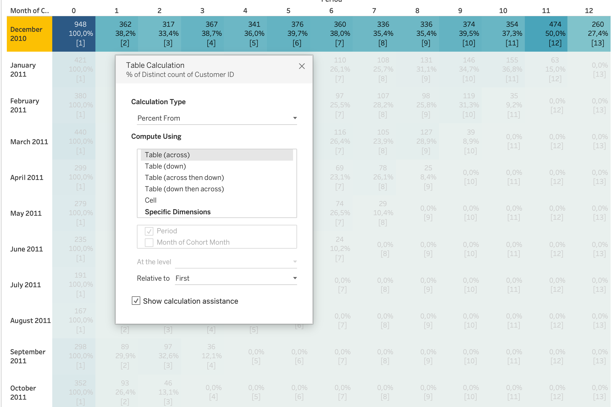
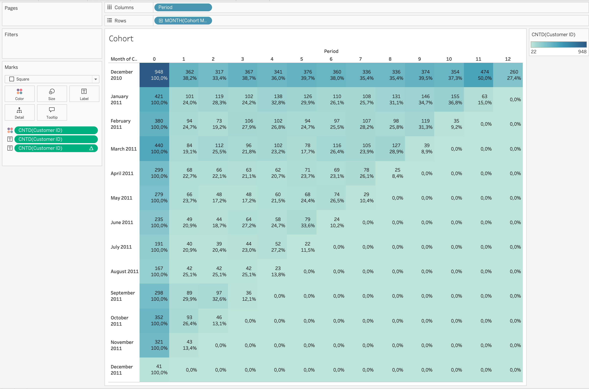
Step 7: Control the View
In order to show only the blocks with values we should filter the view:
- Drag the calculation of Retention Rate from Marks Card to the Data Pane and name it
[Retention Rate]. - Then drag the newly calculated field to the filters shelf, choose At least values from 0.01% and the 0% values will be filtered.
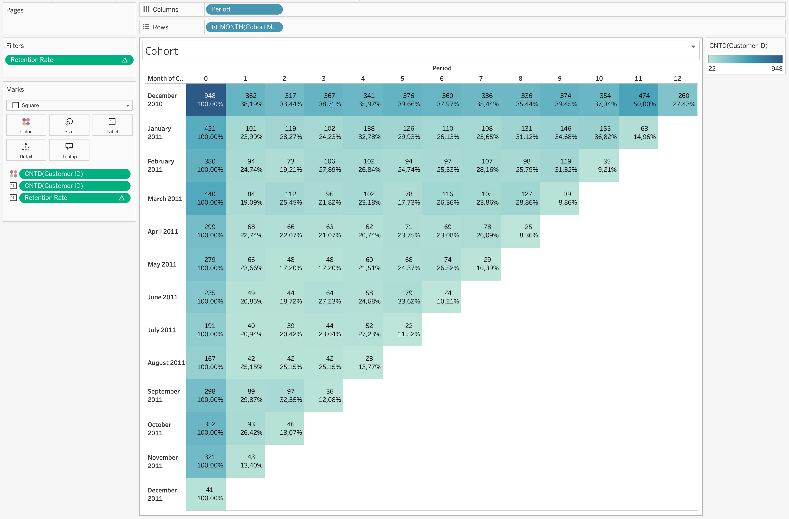
Example Interpretation
Suppose the December 2010 cohort contains customers whose first order happened in January.
If retention for that cohort is:
- Month 0 = 100%
- Month 1 = 38.19%
- Month 2 = 33.44%
this means:
- all customers in the cohort purchased in their first month
- 38% of them returned and purchased again one month later
- 33% of them were still purchasing two months later
This helps identify whether customer engagement is improving or declining across acquisition periods.
Additional Analysis
Because this dataset also has Country, Stock Code, and Description, we can extend cohort analysis further.
1. Cohort by Country
Add Country as a filter or detail to compare retention across markets.
Questions answered:
- Do customers from the United Kingdom retain better than others?
- Which countries have stronger repeat purchasing?
2. Product-Based Cohort Analysis
We can analyze cohorts of customers based on the first product category they bought.
Questions answered:
- Do customers who first bought decorative items retain differently from customers who first bought gift items?
- Which first-purchase products lead to stronger repeat behavior?
3. Revenue Cohorts
Instead of customer retention, focus on monetary value.
Questions answered:
- Which acquisition month generated the highest long-term revenue?
- Do newer cohorts spend more or less than older ones?
Cleaning and Reshaping Data in
Before building visualizations or dashboards, data must often be cleaned and reshaped.
Real-world datasets rarely arrive in a perfectly structured format suitable for analysis.
Common issues include:
- Missing values
- Incorrect data types
- Duplicated records
- Inconsistent formatting
- Wide tables that need to be normalized
- Columns containing multiple values
Cleaning ensures data accuracy, while reshaping ensures data structure fits analytical needs.
flowchart LR A[Raw Data] --> B[Data Cleaning] B --> C[Data Reshaping/optional/] C --> D[Structured Analytical Dataset] D --> E[Visualization & Analysis]
Data Cleaning in Tableau
Data cleaning focuses on improving data quality before performing analysis.
Tableau allows several cleaning operations directly inside the Data Source page or through Calculated Fields.
Handling Missing Values (NULL Values)
Missing values are one of the most common problems in datasets.
NULL values may represent missing records, unavailable information, or incomplete data collection.
Common approaches to handle NULL values include:
- Replace NULL values with a default value
- Filter out rows containing NULL values
- Use calculated fields to define fallback values
Example calculation replacing NULL revenue with zero:
IFNULL([Revenue],0)Another common approach:
ZN([Revenue])ZN() converts NULL numeric values to zero, which is often useful in financial analysis.
Correcting Data Types
Each field in Tableau has a data type such as:
- String
- Number
- Date
- Boolean
- Geographic
Incorrect data types can lead to incorrect aggregations or calculation errors.
Common corrections include:
- Converting strings to numeric values
- Converting strings to date values
- Changing dimensions to measures
Example converting a field to a date:
DATE([Order Date])Example converting a string to a number:
INT([Customer Age])Ensuring the correct data type improves calculation accuracy and visualization behavior.
Removing Duplicate Records
Duplicate rows can distort metrics such as totals, averages, or counts.
Instead of counting all records, analysts often count distinct entities.
Example:
COUNTD([Customer ID])This ensures that each customer is counted only once.
Splitting Columns
Some datasets contain multiple pieces of information within a single column.
For proper analysis, it is often necessary to separate these values into multiple fields.
In the Online Retail dataset, the Description column contains long product names that may include multiple descriptive elements.
Example:
| Description |
|---|
| SET/4 BADGES CUTE CREATURES |
| SET/4 SKULL BADGES |
| FANCY FONT BIRTHDAY CARD |
Sometimes product descriptions may contain structured information such as category and product name within a single field.
Steps:
- Right-click the column
- Select Split or Custom Split
- Choose the delimiter (for example
/or a space)
After splitting, Tableau automatically creates new columns.
Example result:
| Product Type | Product Name |
|---|---|
| SET | 4 BADGES CUTE CREATURES |
| SET | 4 SKULL BADGES |
| FANCY | FONT BIRTHDAY CARD |
Splitting fields improves:
- filtering
- grouping
- hierarchical analysis
- product categorization
Creating Hierarchies
Hierarchies organize fields into structured levels that support drill-down analysis.
Hierarchies allow:
- Drill-down exploration
- Structured navigation in dashboards
- Aggregated views across levels
- Simplified analysis of large datasets
The Online Retail dataset naturally supports a hierarchy such as:
graph TD A[Country] --> B[Customer ID] B --> C[Invoice No]
Example structure:
| Country | Customer ID | Invoice No |
|---|---|---|
| United Kingdom | 17850 | 541696 |
| France | 12583 | 541697 |
This hierarchy allows users to:
- Analyze sales by Country
- Drill down into Customers
- Explore specific Invoices
Steps:
- Drag one dimension onto another in the Data Pane
- Tableau creates a hierarchy automatically
- Rename the hierarchy if needed
- Use the hierarchy in visualizations for drill-down analysis
Using Tableau Prep for Advanced Data Preparation
When datasets become more complex, Tableau Prep provides a visual workflow for preparing and reshaping data.
Tableau Prep allows:
- Joining multiple datasets
- Removing duplicates
- Standardizing values
- Pivoting and unpivoting columns
- Aggregating datasets
- Cleaning inconsistent values
flowchart LR A[Raw Sources] --> B[Tableau Prep Flow] B --> C[Cleaning Steps] C --> D[Reshaped Dataset] D --> E[Tableau Visualization]
Prep uses a visual flow interface, allowing analysts to inspect transformations step by step before publishing the final dataset.
When Data Cleaning Should Be Done Outside Tableau
Although Tableau supports many data preparation operations, some transformations are better performed upstream.
Typical tools include:
- SQL databases
- ETL pipelines
- Python data pipelines
- Data warehouses
Reasons include:
- Better performance for large datasets
- Centralized transformation logic
- Reusable data pipelines
- Improved data governance
In production environments, Tableau often connects to pre-cleaned analytical datasets.
Data Reshaping in Tableau
Data reshaping changes the structure of a dataset so that it fits analytical needs.
Many datasets are stored in wide format, while Tableau analysis works better with long format.
flowchart LR A[Wide Data Format] --> B[Pivot Operation] B --> C[Long/Tidy Data Format]
Pivoting Data in Tableau
Pivoting is a data reshaping technique used to convert columns into rows.
This transformation is particularly useful when datasets store similar measures in multiple columns instead of a single column.
Many analytical workflows and visualization tools work better with long (tidy) data structures, where:
- one column represents the type of measure
- another column represents the value of the measure
flowchart LR A[Gold Column] B[Silver Column] C[Bronze Column] A --> D[Pivot Operation] B --> D C --> D D --> E[Medal Type] D --> F[Medal Count]
Example Dataset: Olympic Medals
For this example we use a dataset containing Olympic medal counts by country and year.
The dataset contains the following columns:
CountryYearSeasonGoldSilverBronzeTotal Medals
Structure before pivoting:
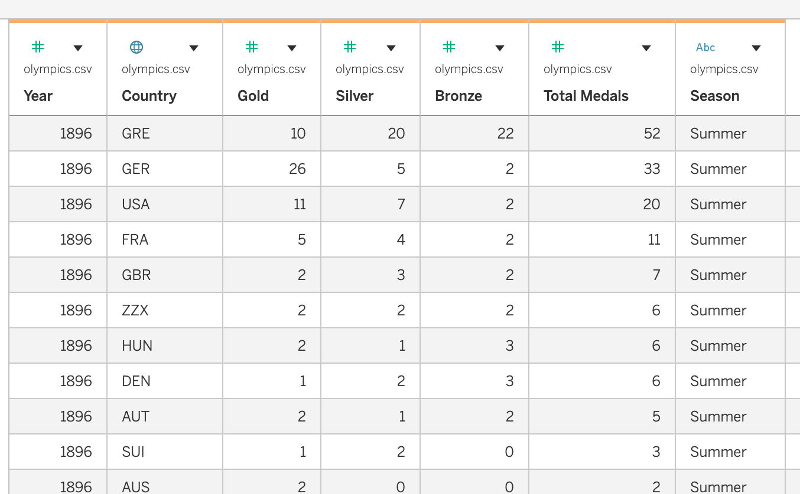
In this structure:
- each medal type is stored in a separate column
- this is called a wide format dataset
However, comparing medal types dynamically in Tableau becomes easier when the dataset is reshaped.
Pivoting Medal Columns
To reshape the dataset, we pivot the following columns:
GoldSilverBronze
Steps in Tableau
Open the dataset in Tableau
Navigate to the Data Source page
Select the columns:
- Gold
- Silver
- Bronze
- Gold
Right-click the selected columns
Choose Pivot
Tableau automatically creates two new fields:
Pivot Field NamesPivot Field Values
Rename these fields:
| Default Name | New Name |
|---|---|
| Pivot Field Names | Medal Type |
| Pivot Field Values | Medal Count |
Dataset after pivoting:
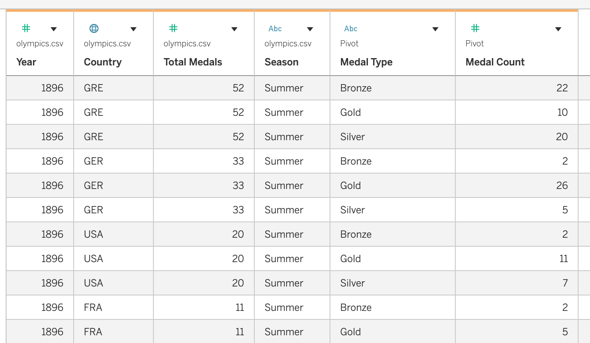
Benefits of Pivoting
Pivoting provides several advantages for analysis and visualization:
- Enables comparison of multiple measures within one chart
- Simplifies dataset structure
- Allows filtering by measure type
- Supports dynamic dashboards and parameter-driven visualizations
Example visualization setup:
| Columns | Rows | Color |
|---|---|---|
| Year | SUM(Medal Count) | Medal Type |
This visualization shows Gold, Silver, and Bronze medals over time in a single chart.
Analytical Questions Enabled by Pivoting
After reshaping the dataset, it becomes easier to answer questions such as:
- How do Gold, Silver, and Bronze medals change over time?
- Which countries win the most gold medals?
- How do medal distributions differ between Summer and Winter Olympics?
- Which countries have the highest total medal counts across seasons?
Pivoting therefore helps transform datasets into a structure that is more flexible for exploration and analysis in Tableau.
Using Tableau Prep for Advanced Data Preparation
When datasets become more complex, Tableau Prep provides a visual workflow for preparing and reshaping data.
Tableau Prep allows:
- Joining multiple datasets
- Removing duplicates
- Standardizing values
- Pivoting and unpivoting columns
- Aggregating datasets
- Cleaning inconsistent values
flowchart LR A[Raw Sources] --> B[Tableau Prep Flow] B --> C[Cleaning Steps] C --> D[Reshaped Dataset] D --> E[Tableau Visualization]
Prep uses a visual flow interface, allowing analysts to inspect transformations step by step before publishing the final dataset.
Tableau Prep vs Tableau Desktop
Both Tableau Prep and Tableau Desktop support data preparation tasks, but they are designed for different stages of the analytics workflow.
Tableau Desktop is primarily used for data exploration and visualization, while Tableau Prep is designed for building reusable data preparation pipelines.
When to Use Tableau Desktop
Tableau Desktop is suitable for simple or analysis-driven data preparation.
Typical use cases include:
- Creating calculated fields
- Handling small data cleaning tasks
- Filtering rows or removing unwanted records
- Performing quick pivots
- Adjusting data types
- Creating hierarchies
Tableau Prep vs Tableau Desktop
Both Tableau Prep and Tableau Desktop support data preparation tasks, but they are designed for different stages of the analytics workflow.
Tableau Desktop is primarily used for data exploration and visualization, while Tableau Prep is designed for building reusable data preparation pipelines.
Summary
| Task Type | Tableau Desktop | Tableau Prep |
|---|---|---|
| Quick data fixes | ✓ | |
| Calculated fields | ✓ | |
| Simple pivots | ✓ | |
| Complex joins | ✓ | |
| Large dataset cleaning | ✓ | |
| Reusable data pipelines | ✓ |
In practice, analysts often use both tools together:
- Tableau Prep to prepare and structure the dataset
- Tableau Desktop to explore, analyze, and visualize the data
When Data Cleaning Should Be Done Outside Tableau
Although Tableau supports many data preparation operations, some transformations are better performed upstream.
Typical tools include:
- SQL databases
- ETL pipelines
- Python data pipelines
- Data warehouses
Reasons include:
- Better performance for large datasets
- Centralized transformation logic
- Reusable data pipelines
- Improved data governance
In production environments, Tableau often connects to pre-cleaned analytical datasets.
Best Practices for Data Cleaning and Reshaping
- Inspect datasets before building visualizations
- Verify data types and formats
- Handle NULL values explicitly
- Convert wide datasets into tidy structures when needed
- Document data transformations
Properly cleaned and reshaped data leads to more reliable analysis and better-performing dashboards.
Tableau Dashboard Creation
In Tableau, a Dashboard is a workspace that combines multiple worksheets, filters, legends, and interactive components into a single analytical interface. Dashboards allow analysts to present different perspectives of data in one place and enable users to explore insights through interaction.
Dashboard creation involves designing the layout, responsiveness, visual formatting, and interactivity of visualizations so users can easily interpret and explore the data.
When creating dashboards, analysts configure:
- Dashboard size and responsiveness
- Layout containers and object positioning
- Dashboard objects
- Visual formatting and styling
- Interactive dashboard actions
A well-designed dashboard enables users to quickly identify patterns, compare metrics, and drill into detailed insights.
Tableau Dashboard Interface Sections
The Tableau Dashboard workspace is divided into several sections that help analysts design layouts, add visualizations, and manage dashboard components.
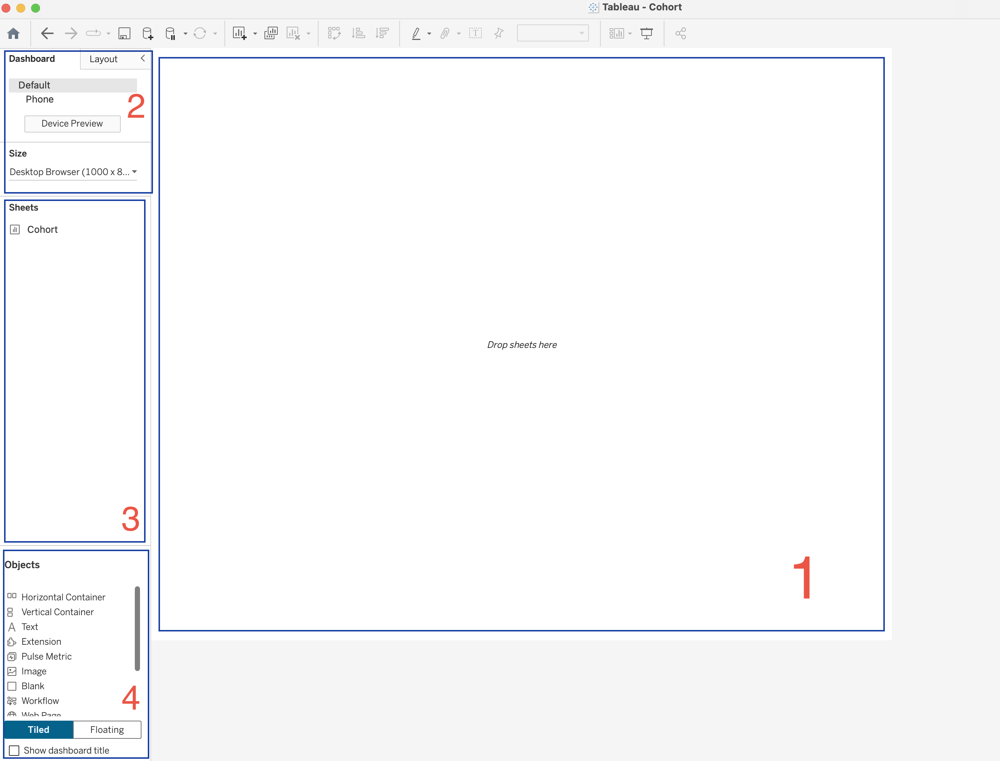
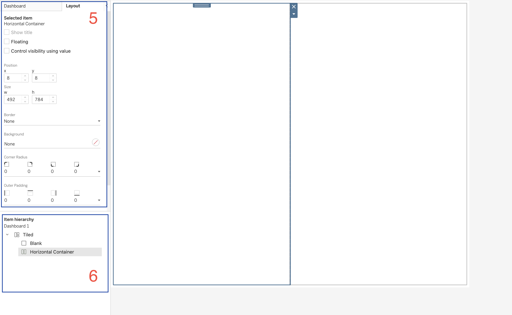
1. Dashboard Canvas
The Dashboard Canvas is the central workspace where the dashboard is built.
When a dashboard is empty, Tableau displays the message:
Drop sheets hereThis area is used to:
- Place worksheets
- Arrange visualizations
- Add filters and legends
- Organize layout containers
- Design the final dashboard layout
Worksheets are dragged from the Sheets panel and dropped into this canvas.
2. Dashboard Settings Panel
The Dashboard Settings panel allows users to configure the overall dashboard properties.
Device Layout
Device layouts allow dashboards to be optimized for different screen types.
Options include:
- Default (Desktop layout)
- Phone layout
- Device Preview
This ensures dashboards remain readable across different devices.
Dashboard Size
The Size option controls the overall dimensions of the dashboard.
Example shown:
Desktop Browser (1000 × 800)Tableau provides three size options.
| Size Mode | Description |
|---|---|
| Automatic | Dashboard resizes according to screen size |
| Fixed Size | Dashboard maintains constant dimensions |
| Range | Dashboard scales between minimum and maximum sizes |
3. Sheets Panel
The Sheets panel lists all worksheets available in the workbook.
Worksheets represent visualizations such as:
- charts
- tables
- maps
- KPI indicators
- cohort analysis views
To add a worksheet to the dashboard:
- Drag the worksheet from the Sheets panel
- Drop it onto the Dashboard Canvas
Multiple worksheets can be combined to create a complete analytical dashboard.
4. Objects Panel
The Objects panel contains elements that help structure dashboards and add interactivity. These objects appear in the lower left part of the Dashboard pane.
Dashboard objects help organize the layout, add information, and enable interaction.
Layout Containers
Containers are the backbone of dashboard design.
They allow multiple objects to be grouped together and aligned properly.
| Container | Description |
|---|---|
| Horizontal Container | Arranges objects side-by-side |
| Vertical Container | Stacks objects vertically |
Containers can hold:
- worksheets
- text
- images
- other containers
Containers support advanced features such as:
- Show/Hide buttons
- Dynamic Zone Visibility (introduced in newer Tableau versions)
This allows dashboards to show or hide entire sections depending on user interaction.
Text Object
The Text object is a simple text box used to display information.
Common uses include:
- Dashboard titles
- Section headers
- Explanatory notes
- Footnotes
- Dynamic labels
Text objects can also be dynamic by inserting parameter values.
Example use:
If a dashboard allows selecting a custom date range, the selected start and end dates can be inserted into the text box to display the current filter range.
Image Object
The Image object is one of the most versatile dashboard objects.
Images can be used for:
- Company logos
- Navigation buttons
- Background images
- Custom icons
- Alerts or visual indicators
Images can be linked to:
- Local files
- Image URLs
Images can also function as navigation buttons by linking them to URLs or dashboards.
This makes them useful for creating custom interactive interfaces.
Blank Object
The Blank object is an empty dashboard element.
Although simple, it is extremely useful for layout design.
Blank objects can be used to:
- Add white space
- Create separators
- Improve alignment
- Hide dashboard elements
Blank objects can be colored, resized, or used as layout placeholders.
Extension Object
The Extension object allows third-party developers to add additional functionality to Tableau dashboards.
Examples of extensions include:
- custom visualizations
- advanced formatting tools
- embedded code editors
- custom styling options
Extensions can be downloaded from Tableau Exchange and added to dashboards.
There are two types of extensions:
| Type | Description |
|---|---|
| Sandboxed | Hosted securely by Tableau |
| Network-enabled | Can access external systems |
When using network-enabled extensions, it is important to review data security settings.
Pulse Metric
The Pulse Metric object displays key performance indicators connected to Tableau Pulse.
Pulse is designed for monitoring business metrics.
Typical uses include:
- revenue monitoring
- KPI tracking
- performance monitoring dashboards
Pulse metrics highlight the most important measures in a dashboard.
Workflow Object
The Workflow object integrates Tableau dashboards with Salesforce Flow, allowing dashboards to trigger automated workflows.
Example workflow:
- User selects marks in a chart
- Selected data is sent to Salesforce Flow
- Automated processes are triggered
Examples include:
- updating CRM records
- triggering notifications
- automating business processes
Web Page Object
The Web Page object functions as a mini web browser within the dashboard.
It can display:
- external websites
- documentation
- embedded applications
- maps
Web Page objects can be static or dynamic.
Dynamic web pages can update based on URL actions triggered by user interaction.
Download Object
The Download object allows users to export data from dashboards.
Export options include:
| Export Type | Description |
|---|---|
| Crosstab | Export data table (Server / Cloud only) |
| Image | Export dashboard as PNG |
| Export workbook or dashboard | |
| PowerPoint | Export dashboards as slides |
This feature is often required by stakeholders who need data snapshots for reporting.
Add Filters Extension
The Add Filters extension allows dashboard users to choose which filters they want to display.
Instead of creating multiple dashboard versions, users can dynamically select filters relevant to them.
Example:
Different users may want different filters:
- one group filters by date and location
- another group filters by sales and profit
The Add Filters extension allows each user group to configure filters themselves.
Einstein Discovery
Einstein Discovery integrates Salesforce AI with Tableau dashboards.
It allows dashboards to include machine learning predictions and automated insights.
Capabilities include:
- predictive modeling
- trend explanation
- recommendation generation
Einstein Discovery requires a Salesforce license.
5. Layout Panel
The Layout panel allows configuration of properties for the selected dashboard object.
Properties include:
| Property | Description |
|---|---|
| Position | X and Y coordinates |
| Size | Width and height |
| Border | Border styling |
| Background | Background color |
| Corner Radius | Rounded container corners |
| Padding | Space around objects |
These settings allow precise control of dashboard layout.
6. Item Hierarchy
The Item Hierarchy panel displays the structure of objects within the dashboard.
Example structure:
Dashboard
Tiled
Blank
Horizontal ContainerThe hierarchy panel helps users:
- understand dashboard structure
- manage nested containers
- select objects within complex layouts
Dashboard Actions
Dashboard Actions allow visualizations to interact with each other.
Actions are configured using:
Dashboard → Actionsflowchart LR A[User Interaction] --> B[Dashboard Action] B --> C[Filter Action] B --> D[Highlight Action] B --> E[Navigation Action] B --> F[Parameter Action] B --> G[URL Action] B --> H[Set Action]
Filter Actions
Filter actions allow one worksheet to filter another worksheet.
Example workflow:
- User selects a category in a chart
- Other charts update to show related data
Highlight Actions
Highlight actions emphasize related data across visualizations without filtering the data.
URL Actions
URL actions allow dashboards to open external web resources.
Examples include:
- linking to product pages
- connecting to external systems
Parameter Actions
Parameter actions allow interactions to update parameter values dynamically.
Set Actions
Set actions allow users to dynamically modify sets through interaction.
This enables:
- dynamic segmentation
- interactive comparisons
- scenario analysis